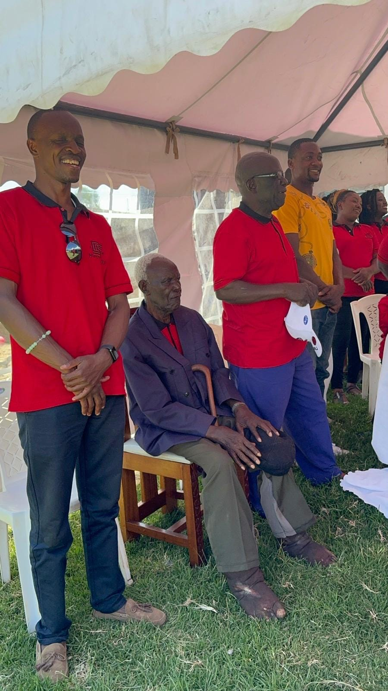
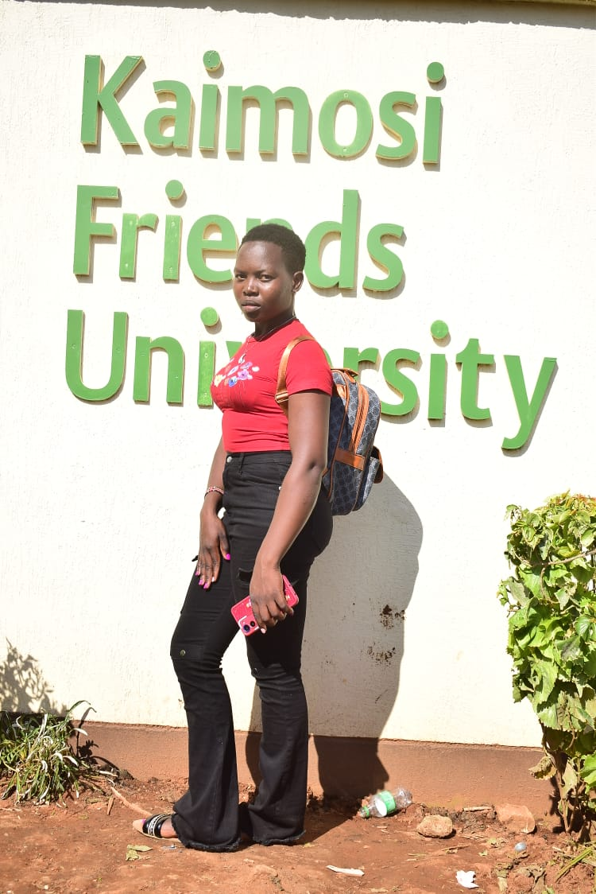
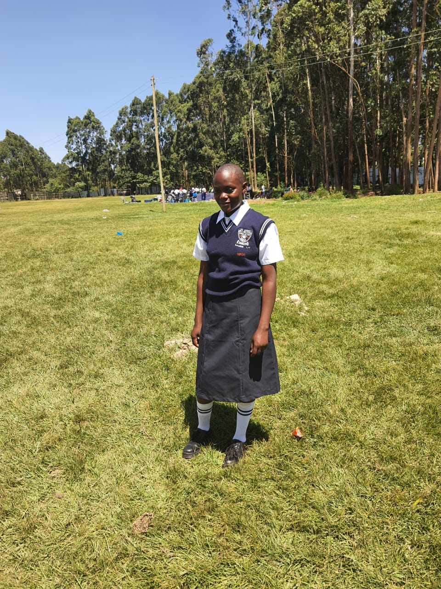
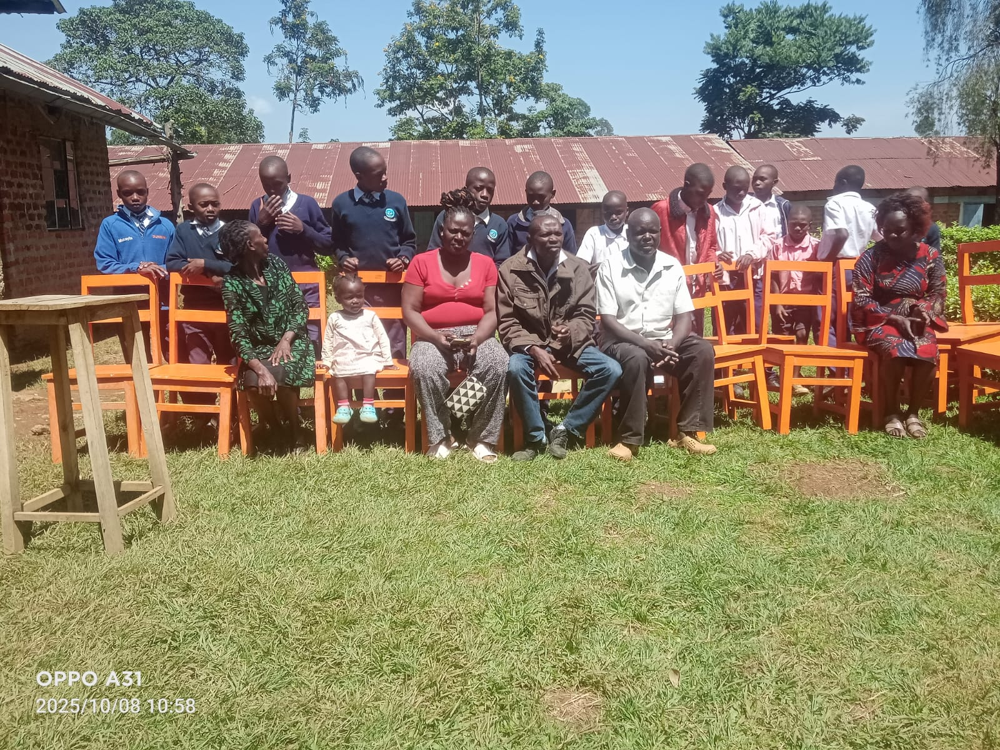
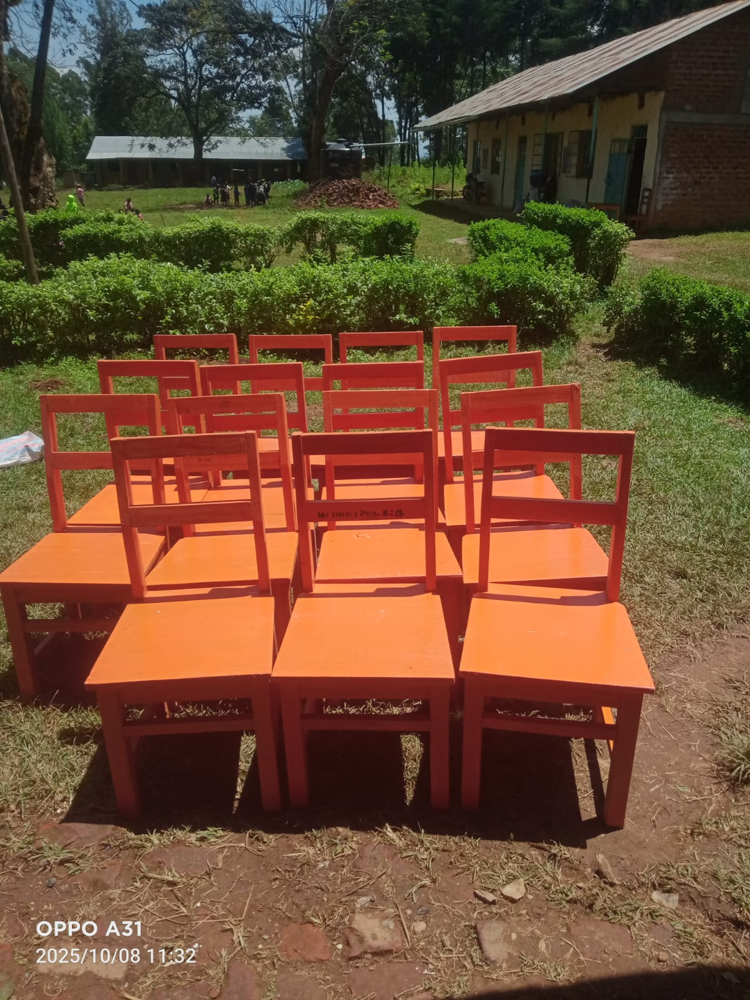
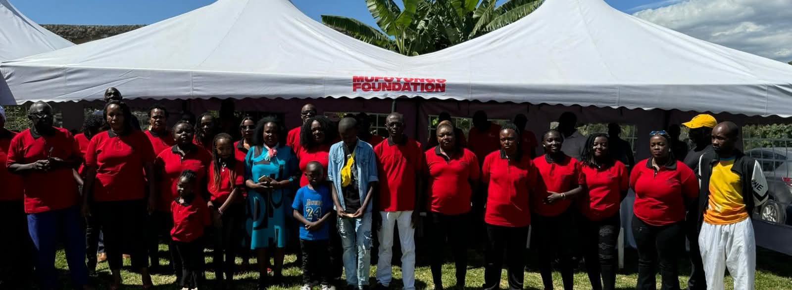
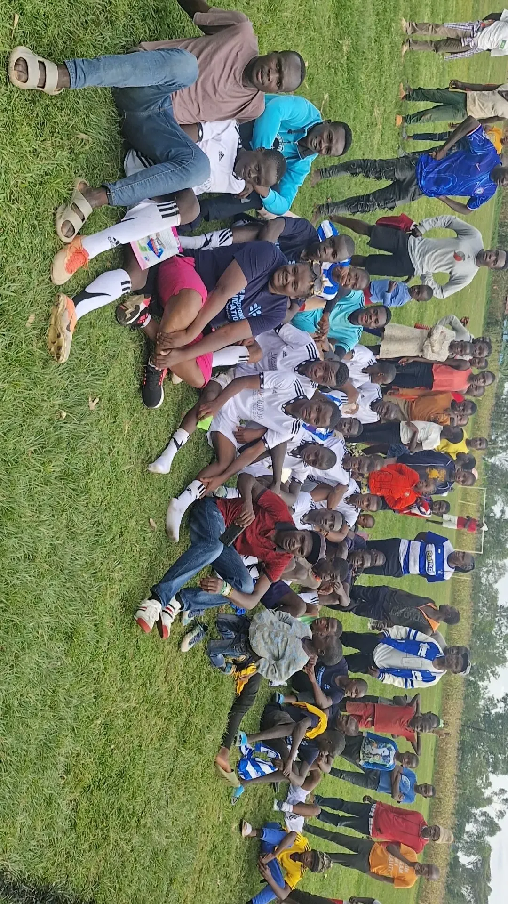
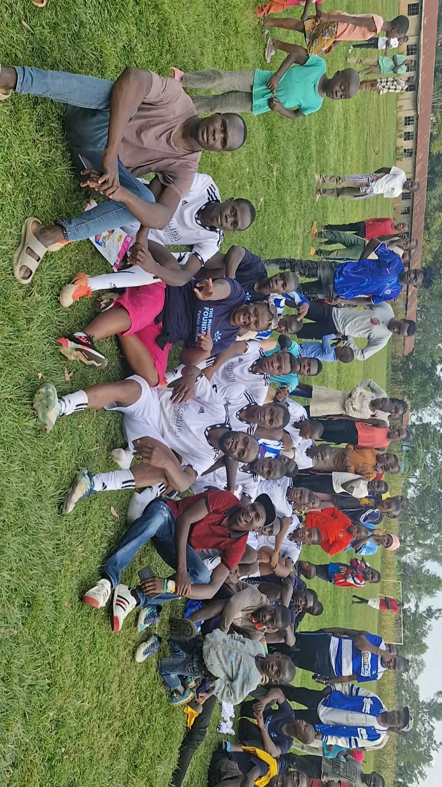

Education & Opportunity
Helping promising students continue learning when financial hardship threatens their future.
A FAMILY LEGACY OF SERVICE
Established in memory of Melisa Mufoyongo, we work alongside communities primarily in Shinyalu Constituency, Kakamega County, Kenya, to expand opportunity through education, inclusion, youth development and practical support.
Explore Our WorkOUR STORY
The story of Mufoyongo Foundation began after the passing of our beloved mother, Melisa Mufoyongo, in 2021. As a family, we wanted her memory to live through compassion, service and practical support for others.
In 2023, that commitment became Mufoyongo Foundation, a registered charitable organisation in Kenya, incorporated as a Company Limited by Guarantee. Our primary catchment area is Shinyalu Constituency in Kakamega County, Kenya, where we seek to work closely with local communities and respond to locally identified needs.
Our resources are limited, but our commitment is not.

WHAT WE DO
Helping promising students continue learning when financial hardship threatens their future.
Supporting grassroots sport, positive youth engagement, teamwork and talent.
Our vision includes widows, orphans, persons with disabilities, vulnerable adults and families facing hardship.
Building pathways toward dignity and independence through mentorship, skills and sustainable opportunity.
REAL STORIES OF IMPACT
Education is one of the Foundation's key priorities. We support young people whose education is at risk because of difficult family or financial circumstances.

A young woman who performed well in secondary school faced the possibility of missing university because her family could not afford the cost. Mufoyongo Foundation stepped in. She is now studying at Kaimosi Friends University, with the Foundation supporting tuition, accommodation, food and essential educational needs.

Mufoyongo Foundation supports a student at Arap Moi Girls High School who has lost both parents, helping her continue her education and pursue her future with dignity and hope.
We protect the dignity and privacy of the people we support and share beneficiary stories responsibly.
OUR ACTIVITIES & IMPACT

Our Patron, Peter Mufoyongo, presenting chairs donated to Madioli Primary School courtesy of Mufoyongo Foundation, supporting a more practical learning environment for pupils.

The Madioli Primary School chair donation reflects our commitment to practical, community-led support for education in Shinyalu.
OUR COMMUNITY IN ACTION
A glimpse of Mufoyongo Foundation members, community engagement and grassroots participation in Shinyalu.



LEADERSHIP
PARTNER WITH US
Much of our work is currently sustained through family contributions, friends and well-wishers. We welcome responsible partnerships with charities, businesses, educational institutions, community organisations and individuals in Kenya and internationally to strengthen community-led work in Shinyalu Constituency, Kakamega County.
Ways to support: programme funding, educational materials, computers, vocational equipment, sports kits, books, stationery, professional expertise and mentorship.
International Relations & Point of Contact: Eunice Mufoyongo
General enquiries: info@mufoyongofoundation.org
Partnership enquiries: partnerships@mufoyongofoundation.org
WhatsApp: +254 720 272423
Facebook: Follow Mufoyongo Foundation on Facebook
OUR COMMITMENT
We are committed to responsible use of resources, appropriate record keeping, safeguarding beneficiaries and keeping partners informed about how their support is used.